I am Makayla Couzelis, the creator of this webpage. My dad is the one who inspired me to do this. He is even making his own video game! Anyway, are you ready to explore Pyrrhia, Pantala, and all the dragons inside them!?
These are the different dragon tribes that live in Pyrrhia and Pantala. There are seven different tribes in Pyrria, the MudWing tribe, the SandWing tribe, the SkyWing tribe, the SeaWing tribe, the RainWing tribe, the IceWing tribe, and the NightWing tribe. In Pantala there are three new tribes, the HiveWing tribe, the SilkWing tribe, and the LeafWing tribe. For the Pyrrian tribes I will show the alliances for books 1-5 and the students at Jade Mountain Academy for books 6-10.
This is a MudWing. They are thick with armored brown scales and sometimes have amber and gold underscales. They also are large with flat heads that have the nostrils on top of their snouts. They can breathe fire if they are warm enough, hold their breath for up to an entire hour, can blend into large mud puddles, and are normally very strong. Their queen is Queen Moorhen and they are allied with Burn and the SkyWings in the great war. The students at Jade Mountain Academy are Marsh, Newt, Sepia, Sora, and Umber.
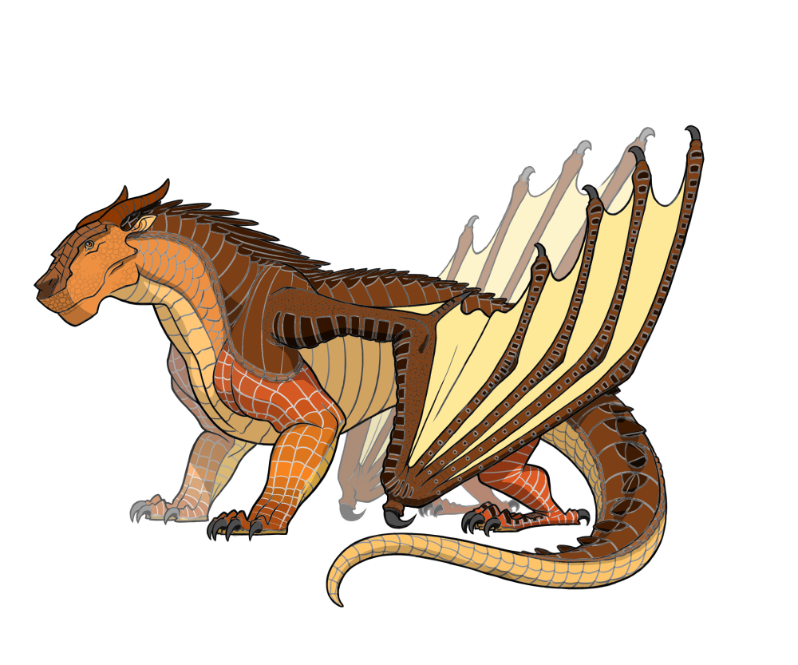This is where they live.
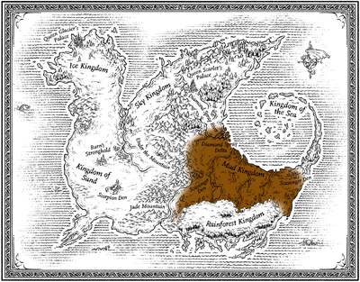This is a SandWing. They have pale gold of white scales the color of sand in the desert, a poisonous barbed tail, and forked black tongues. They can survive with no water for a long time, can poison with their tails like scorpions, can camoflauge in the desert sand,and breathe fire. Since Queen Oasis died, the tribe was split beetween three rivals for the throne, that being the sisters Blister, Blaze, and Burn. The different heirs have different alliances but most SandWings are following Blaze, which means most are allied with the IceWings. The students at Jade Mountain Academy are Arid, Onyx, Ostrich, Pronghorn, and Qibli.
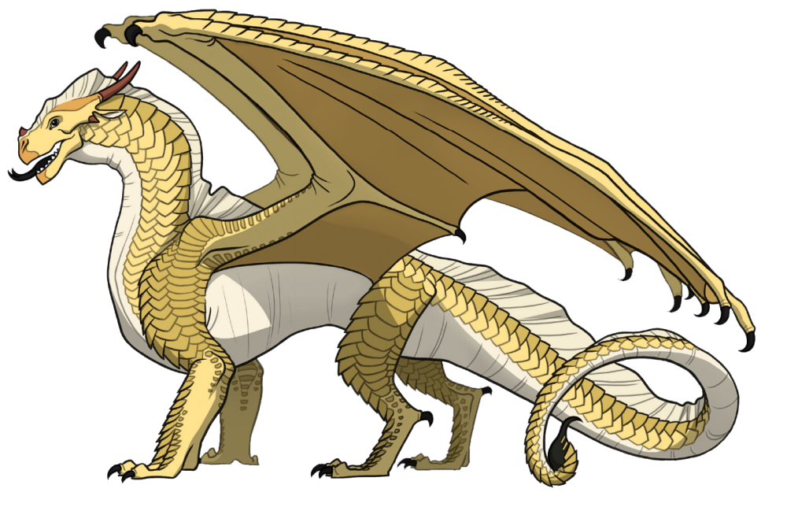This is where they live.
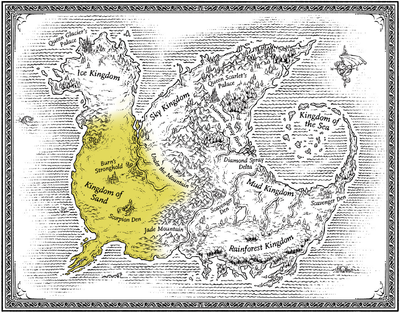This is a SkyWing. They have red-gold scales and very big wings. They are also powerful fliers and fighters and can breathe fire. Their queen is Queen Scarlet and they are allied with Burn and the MudWings in the war. The students at Jade Mountain Academy are Carnelian, Flame, Garnet, Peregrine, and Thrush.
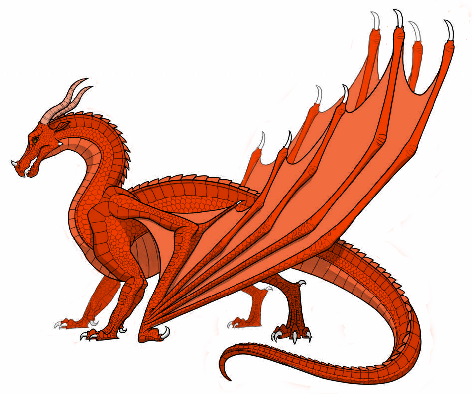This is where they live.
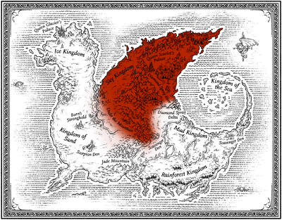This is a SeaWing. They have blue, green, or aquamarine scales, webbed claws, gills, and glow-in-the-dark stripes on their tails, snouts, and underbellies. Their queen is Queen Coral and they are allied with Blister in the war.The students at Jade Mountain Academy are Anemone, Barracuda, Pike, Snail, and Turtle.
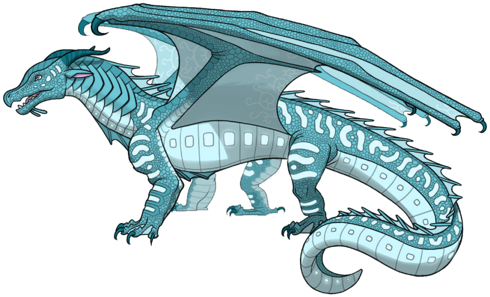This is where they live.
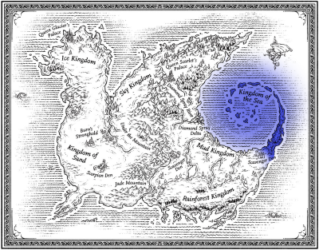This is a RainWing. Their scales constantly change color and are normally bright like birds of paradise, and they have prehensile tails. The other tribes think that their queen is Queen Dazzling, but actually their queen is always changing until the third book so I can't actually tell you their queen. Plus, any RainWing can be the queen if they want to also until the third book. They are not in the war. The students at Jade Mountain Academy are Boto, Coconut, Kinkajou, Siamang, and Tamarin.
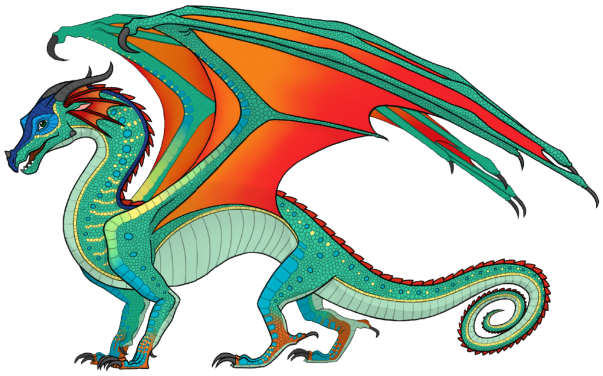This is where they live.
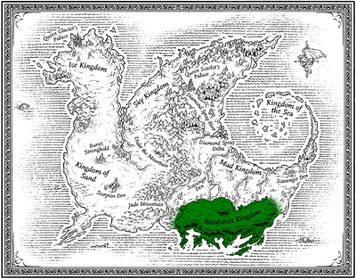This is an IceWing. They have silver scales like the moon or light blue scales like ice, forked blue tongues, and tails that narrow to a whip-thin end. They can also survive subzero temperatures and bright light, and exhale a deadly freezing breath. Their queen is Queen Glacier and they are allied with Blaze and most SandWings in the war. The students at Jade Mountain Academy are Alba, Changbai, Ermine, Icicle, and Winter.
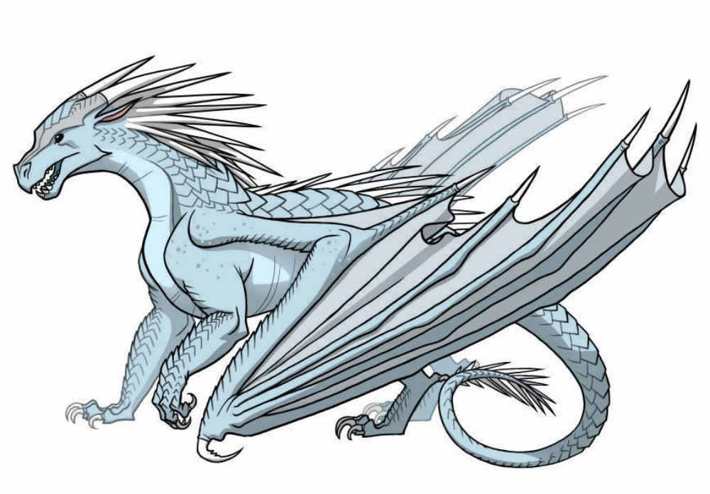This is where they live.
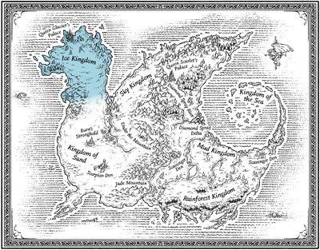This is a Nightwing. They have purple/black scales and scattered silver scales on the bottom of their wings like a night sky, and forked black tongues. They can also breathe fire, disappear into dark places, known to fortell the future and read minds in books 1-5, but can only do it if they are under at least 1 full moon. Their queen is a secret until you get to the fourth book, and they are too powerful and mysterious to be part of the big war, even though they are ordering the dragonets of destiny to choose Blister. The students at Jade Mountain Academy are Bigtail, fearless, Mightyclaws, Mindreader, and Moonwatcher.
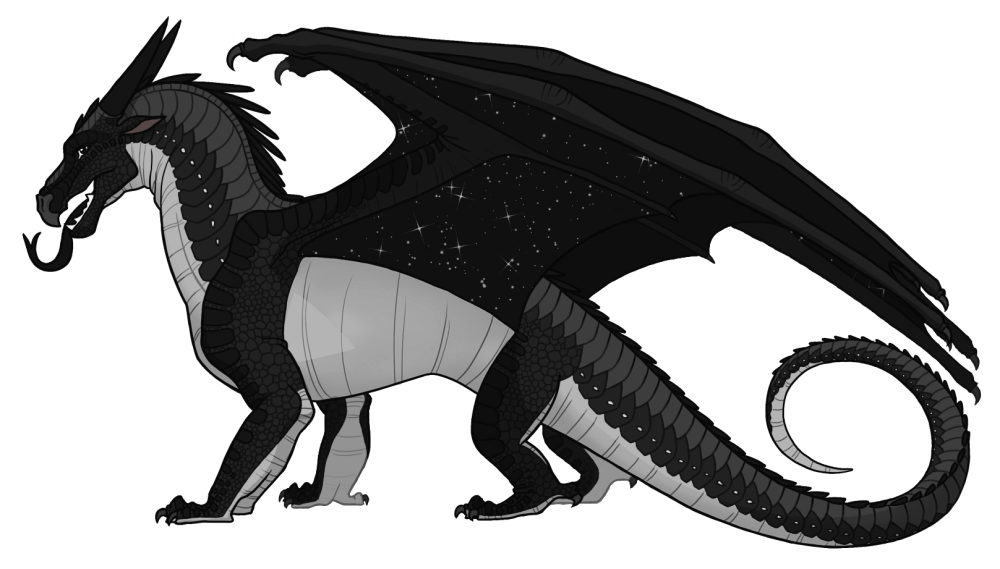In the first three books, where they live is unknown, but in the fourth book and after, they live with the RainWings in the RainWing kingdom.
This is a Silkwing. Silkwing dragonets are born with no wings, but they go through a metamorphosis when they turn six, when they grow four big wings and silk spinning abilities. They are beautiful and gentle as butterflies, with scales in any color under the sun, but not black.They can spin silk from glands on their wrists to create webs or other woven articles. They can also detect vibrations with their antennae to assass threats. Their queen is Queen Wasp but the last Slikwing queen, before the Tree Wars, was Queen Monarch.

This is a Hivewing. Hivewings are red, yellow, and/or orange, but always mixed with some black scales and have four wings. They vary from dragon to dragon. Some examples includedeadly stingers that can extend from their wrists to stab their enemies, venom in their teeth or claws,a paralyzing toxin that can immobilize their prey, or boiling acid sprayed from a stinger on their tails. Their queen is Queen Wasp.

This is a Leafwing. The Leafwings were wiped out during the Tree Wars with the Hivewings, but when they lived, the tribe had green and brown scales and wings shaped like leaves. When they existed, they could absorb energy from sunlightand were accomplished gardeners. Some were rumored to have unusual control over plants. The last known queen of the Leafwings was Queen Sequoia, which was about fifty years ago, which was the time of the Tree Wars.

These are the main wings of fire books. They will be listed in order.There are also prophecies that go with a group of books. I will show them to you and the group it is for will be shown below.
This is for books #1-5
-----------------------------------------------
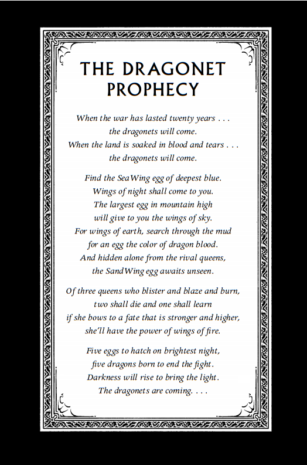 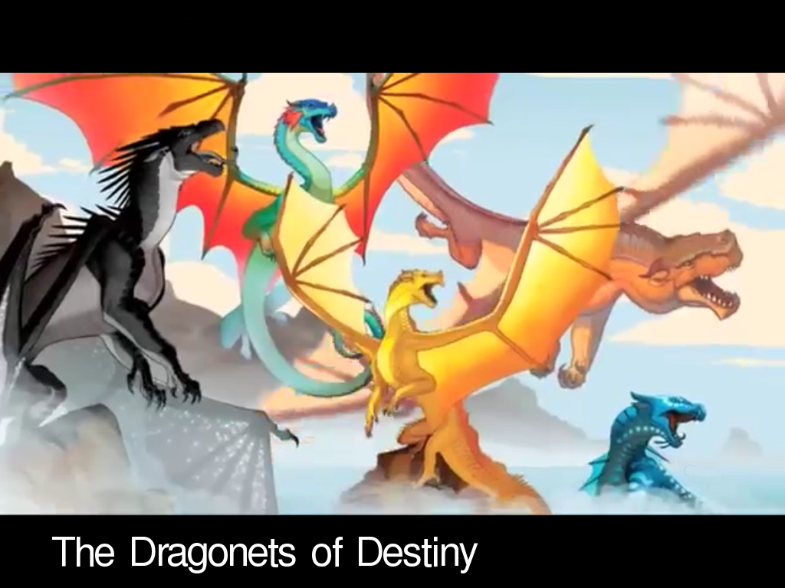From the perspective of: Clay the MudWing
Beggining of Prologue: A dragon was trying to hide in the storm. Lightning flickered across the dark clouds. Hvitur clutched his fragile cargo closer. If he could make it over the mountains, he'd be safe. He'd escaped the sky dragons' palace unseen. And the secret cave was so close....But his theft had not been as stealthy as he thought, and his eyes as black as obsisian were already tracking him from below. The enormous dragon on the mountain ledge had pale gold scales that radiated heat like a desert horizon. Her black eyes narrowed, watching the gleam of silver wings far up in the clouds. She flicked her tail, and behind her two more dragons rose into the sky and dove into the heart of the storm. A peircing shriek echoed off the mountains as their talons seized the moonpale ice dragon."Bind his mouth,"the waiting dragon ordered as her soldiers dropped Hvitur on the slick, wet ledge in front of her. He was already inhaling, ready to attack. "Quickly!" One of the soldiers grabbed a chain from the pile of smoldering coals. He threw it around the dragons's snout, clamping his jaws together with a sizzling smell of burning scales. Hvitur let out a muffled scream. "Too late." The sand dragon's forked tongue slithered in and out of her mouth. "You won't be using your freezing-death breath on us, ice dragon."
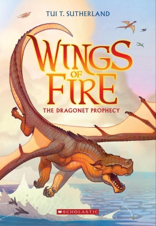From the perspective of: Tsunami the SeaWing
Beggining of Prologue: Underwater, Webs couldn't hear the screams of dying dragons. Underwater, the battle was as far away as the three moons. Fire couldn't touch him. Taalons couldn't scar him. Underwater, he was safe. Safe and a coward...still better than loyal, brave, and dead. Webs shuddered awake. A catfish was staring at him blankly. Its whiskery tendrils drifted in the current. The expression on its face said,"Why is there a dragon sleeping on my river stones?" Webs ate it, and that made him feel a little better. The Talons of Peace must know what's happened to the dragonets by now, he thought. They have spies in the Skywing palace. They don't need to hear it from me. The other talons did not need him to stand up in front of them and say,"We failed."But where could he go? He was already hiding from his own tribe, the Seawings. Did he have to hide from the Talons of Peace for the rest of his life as well? Webs paddled to the surface of the river and cautiosly poked his head out. It was dark, with the Claws of the Clouds Mountains blocking most of the moonlight like vast shadowy teeth. He'd been swimming downriver for days. The Sky Kingdom is far away now. The Sky Kingdom, and the five dragonets he'd sworn to protect. Webs dragged his long, aching body out of the water and took three steps into the forest before he noticed the dark shapes waiting for him. He spun around, but a new dragon loomed out of the river to block his escape. Black spiral patterns marked his green scales, and his teeth gleamed in the moonlight. "Webs,"said the other Seawing in a pleasant voice,"I thought you would never wake up." Webs drew his talons through the riverbank mud."Nautilus,"he said.
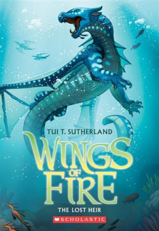From the perspective of: Glory the RainWing
Beggining of Prologue: The five dragonets were fighting. Again. Bright scales in green and red and gold caught the rising sun as the young dragons darted between the rocks, claws and teeth flashing. Five forked tongues hissed with fury. Beyond them, below the cliff, the sea crashed against the sand with a muffled rushing sound, as if it didn't want to compete with the shouts of the dragons. It was emberrassing, was what it was. Nautilus glanced up uneasily at the massive black dragon beside him. The dragonets were so busy yelling at one another that they didn't even noticed him yet. Nautilus wished he could read Morrowseer's mind the way Morrowseer was undoubtedly reading his. He also wished there were more Talons of Peace around, but when word spread that the Nightwing was coming, most of them suddenly found urgent missions elsewhere. The peace movement's hideout in the seaside cliffs was virtually deserted this morning. Ocasionally a dragon would emurge from on of the caves, spot Morrowseer, and instantly vanish again. The five dragonets were the only ones on top of the cliffs; although there were several other young dragons living with the Talons of Peace, they'd all benn whisked out of sight. But apparently no one had seen fit to warn the objects of Morrowseer's scrunity that he was coming, or that they were going to be inspected. "Well,"Morrowseer said."They are...energetic." "They were just a backup plan,"Nautilus said defensively."Nobody thought we'd need them. Especially not all of them; we thought maybe one, or two, if something went wrong with the originals. We haven't spent a lot of time training them." "I can see that." Morrowseer's dark eyes narrowed as Viper, the Sandwing, fell into a crevice and the Mudwing prmptly tripped and landed on top of her. With a hiss, Viper whipped around and bit Ochre's tail, setting off a yowling whine. "Exuse me,"Nautilus said. He could see where this was going. He stepped forward, cuffed Viper's ears, and snatched Squid, the little green Seawing, out of the way before the others could set his tail on fire."Stop this!" he hissed."You are being watched!"Flame, the red Skywing dragonet, snapped his mouth shut and whipped his heaad around, scanning the twisted rocks of the sunrise and looked down his snout majestically."I knew it!"crowed the little Nightwing dragonet. Fatespeaker leaped off a stone pillar, flapping her wings proudly."I knew a Nightwing was coming to see us! Didn't I tell you guys this was going to happen?" "Did you?"Ochre scratched his large brown head."No,"said Viper. "Don't think so,"piped up Squid from behind Nautilus's back."Even if you did, you also predicted an earthquake, a new Talon of Peace, and that we'd have something besides seagulls for breakfast this week,"said Flame."And since none of those happened, you can see why we might have stopped listening.""Well,I knew,"Fatespeaker said blithely."I saw with my powers! And I forsee that he brought us something great for breakfast. Didn't you?"She beamed up at Morrowseer. He blinked slowly."Hmmm. Nautilus, a word please.""Can I come, too?"the black dragonet asked,bouncing closer to Morrowseer."I've never met another Nightwing before. Although, of course, I feel a very strong psychic connection with our whole tribe.""Stay. Here."Morrowseer pressed one claw into her chest and moved her backto the other dragonets. She sat down and curled her tail around her talons with a huffing snort. Morrowseer stepped down the rocks, out of earshot. When he turned, he found Nautilus right behind him. But clinging to his tail was the Seawing dragonet. Morrowseer gazed at Squid disapprovingly. "I can't leave him alone with them,"Nautilus said apologetically."Whenever I'm not watching, one of them bites him.""Or they all do,"sniffed the small green dragon.
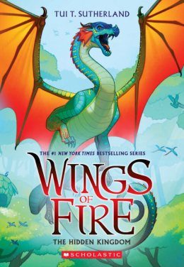From the perspective of: Starflight the NightWing
Beginning of Prologue: The ice dragons came out of nowhere. It should have been a quiet night; they shouldn't have seen anyone but Skywings and other Mudwings on their patrol along the mountainous border between their kingdoms. There hadn't been a battle near their village since the one where they lost Crane, sixteen days ago. Reed still couldn't think about that battle without feeling a huge pit open up in his chest. Sometimes he wanted to close his eyes and fall into that pit and never come out. But he couldn't: he had four other brothers and sisters who depended on him. He was their leader, their bigwings-even though he knew now that he wasn't supposed to be. It should have been their brother Clay, whose egg was stolen before they all hatched."Did you guys hear that?" Umber whispered, darting up tp fly beside him. The smallest dragon in their Mudwing troop af siblings, Umber was also the most observant. Reed knew by now that it was always worth listening to him."What?"Reed whispered back, tilting his head and straining his ears. His wings caught the air currents as they both soared higher, and he studied the dark, jagged shapes of the Claws of the Clouds Mountains. He couldn't see any movement or hear any wingbeats. Still, he twisted around to check on his brothers and sisters, calling them closer with a flick of his tail. In a moment, Pheasant, Sora, and Marsh were flying in close formation behind him."I thought I heard hissing,"Umber said."Somewhere close by."Reed glanced down uneasily at the shadowy trees that covered the mountain slope below them. Anything could be hiding in there. But the only sound he heard was the Sandwing general up ahead, calling at top volume as if"stealth patrol" were only a funny name for what they were doing."Move it, Mudwings!"bellowed the sand dragon. His squadron of seven Sandwings, all feircely loyal to Queen Burn, hovered behind him, grunting."I want to wrap this patrol up and get some sleep tonight!""It was probably nothing,"Umber said to Reed. And that was when the nine ice dragons suddenly shot out of the forest and attacked the Sandwings. It was so fast, so calculated and swift and sudden, that two Sandwings were sent spiraling toward the shredded wings and blood pouring from their throats before Reed could even process that this was a real attack. Marsh shrieked with terror and grabbed Reed, nearly tumbling the bigwings out of the sky. Marsh had never really recovered from their first battle, where he'd seen their sister Crane die in front of him. I need to do something about that, Reed thought, but not right now."March, keep it together!"he shouted, pulling his wing free."Come on, quick, we have to help!" He saw the hesitation on all their faces and caught himself wondering-again-what Clay would have done in this situation, and whether the others would have been happier and safer following him...and also wondering if they were wondering that, too. But no one said what they must be thinking-it's a suicide mission; what help can we be; I don't want to lose another sibling. Instead thay formed up behind him and dove toward the writhing dragons.
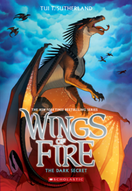From the perspective of: Sunny the SandWing/NightWing hybrid
Beggining of Prolouge: Twenty Years Ago... It is nearly impossible to steal from a dragon, particularily a royal one with a palace and guards and very high walls. At least, thats what Queen Oasis kept telling herself as she hurried along the dark halls, breathing fire to light her way. Nearly impossible and decicedly stupid. And yet, she had this terrible feeling... Something was wrong. There was something scrabbling aroud in her palace. With her exeptionally sharp Sandwing hearing, she was sure she could hear squeaking, like far away maice, and perhaps the clinking of coins. But mice didn't steal treasure. So what was it? Was she imagining it? She'd woken from a deep sleep with a start, as if someone had stabbed her in the chest with his venomous tail. It seemed unlikely, but...she was going to check on the treasure anyway. The Sandwing queen whirled around a corner and collided with two of her daughters, Blaze and Blister."Ow,"Blaze complained, hopping backward with a grimace."Mother, you stepped on my foot."Blister said nothing, but sidestepped into a corner to get out of the queen's way. Her dark eyes were fixed on every move Oasis made, in that unsettling way she had. Oasis had had a feeling from the moment Blister hatched: this was the daughter who was going to kill her. Her oldest daughter, Burn, was bigger and stronger, but Oasis and Burn actually got along, in a way. They understood each other, apart from Burn's obsession with mutilating animals. And it was easy to distract Burn: give her something creepy-looking and she'd disappear into hero rooms for days. Blister, on the other talon, always seemed to be calculating the moments till her mother's demise, and she'd been like that ever since she was a small dragonet-ever since she'd first realized that killing her mother would make her queen.
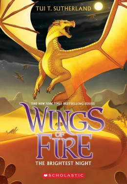For books #6-10
---------------------------------------------
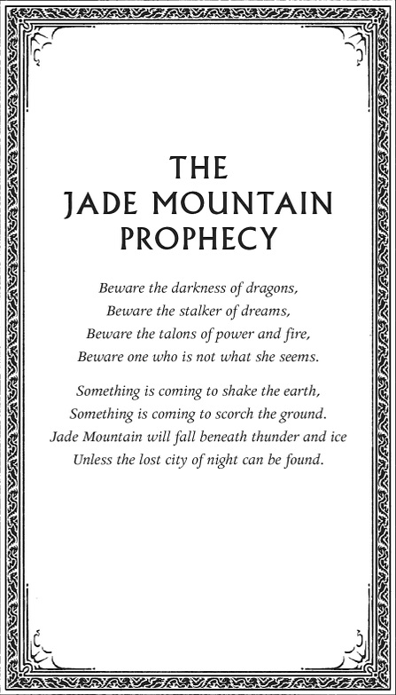 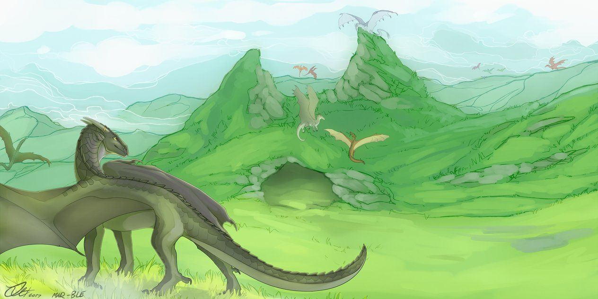This section also has a page I will show below.
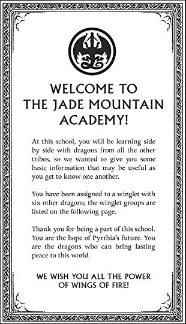From the perspective of: Moonwatcher the NightWing
Begining of Prolouge: Four Years Ago... The volcano was restless, and so were the dragons in the Nightwing fortress. Secretkeeper felt the mountain rumble under her talons as she hurried through the stone halls. There were too many dragons awake --too many witnesses who might wonder where she was going in the middle of the night. She kept her head down, but she felt the curious looks sliding under her scales with each dragon she passed. How many of them knew what tonight should have been? Did anyone remember? She didn't need to count days to know. It was like a voice inside her head screaming, Tonight! It's hatching! Hurry! Don't get caught! Hurry! Because if it happened and she wasn't there... She imagined hungry panthers prowling the undergrowth, dangerous crocodiles with gleaming teeth, or unpredictable curious idiot dragons who might do anything with a mysterious abandoned egg. But she couldn't run, not with other Nightwings still awake and watching her. Why tonight of all nights? Usually everyone in the tribe slept like sloths from dusk to dawn. Just before she reached the ledge, she passed Mastermind and Farsight. Mastermind gave her a hard stare. He knows, she thought with a stab of panic. But is was Farsight who stopped and spoke to her."Oh, Secretkeeper, poor dear,"she said, folding her wings. Secretkeeper winced; her name had never sounded more appropriate. Sometimes she wondered if her name had made her this way-if she was unconsciously trying to live up to it with the biggest, most unforgivable secret a Nightwing could have."The egg you lost was due to hatch tonight, wasn't it? Are you alright?" Farsight went on."Do you want someone to sit with you?"NO! Secretkeeper curled her claws in and and shook her head."I'm fine,"she said."Just...going to get some air.""Do you want company?"Farsight asked. Behind her, Mastermind frowned irritably."I know it's not the, same but whaen Morrowseer took my egg-"Secretkeeper could only think of one way to stop her, and it was harsh, but she had to, because she had to go, right now."It's not the same at all!" she snapped, shooting a burst of flame out her nose."You have two surviving dragonets, and one of them is off the continent being pampered and overfed and worshipped by the Talons of Peace. So don't try to act like you understand me!"Farsight recoiled as if Decretkeeper had bitten her. Mastermind looked startled, perhaps a bit impressed...maybe a little suspicous. Secretkeeper whirled and fled up the corridor before either of them could say anything else. I'll apologize tommorrow. Se'll forgive me. Farsight is like that.
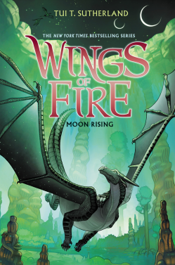From the perspective of: Winter the IceWing
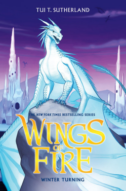For books #11-13
--------------------------------------------
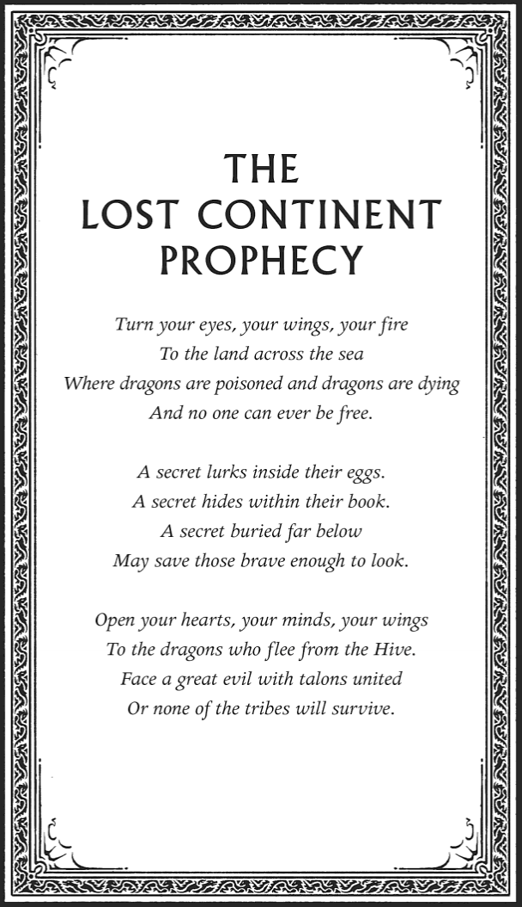 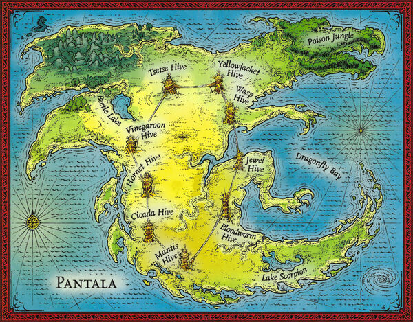